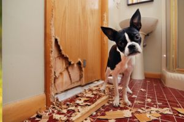
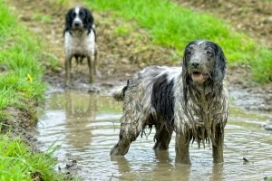
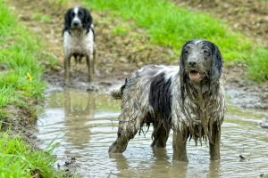

Hejka!
Mam na imię Sandra i mam 25 lat.Od 5 lat zajmuję się zawodowo szkoleniem psów oraz prowadzę szkołe dla psów Dingo.
Moja praca jest jednocześnie moją największą pasją. Uczę psio-ludzkie teamy współpracy na zasadach wzajemnego szacunku i zrozumienia.
Po 3 latach aktywnej pracy szkoleniowca poszłam o krok dalej i przeszłam kolejne szkolenie- tym razem na dogoterapeutę.
Moją pracę możecie podejrzeć na stronie Dingo. oraz na moich mediach społecznościowych- Facebooku oraz Instagramie.

Dlaczego chcę coś zmienić?
Wiele osób myśli, że praca z pieskami to szczyt marzeń- słodkie puchate kulki, które chcą się ciągle przytulac i bawić...Niestety jest to dalekie od prawdy ;(
Moja codziennością nie są słodkie, grzeczne pieski (takie nie potrzebują szkoleniowca ;) ), ale właśnie psy z problemami.
AGRESJA DO ZWIERZĄT I LUDZI
CIĄGNIĘCIE NA SMYCZY
NISZCZENIE W DOMU
CIĄGŁE SZCZEKANIE
BRAK POSŁUSZEŃSTWA

 

Oprócz tego zdecydowanie nie pomagają ludzcy klienci, którzy często swoich psów nie rozumieją i nie szanują- wielokrotnie spotykam się z biciem, wrzaskami, zamykaniem psów i zaniedbaniami...
Z bardziej błachych powodów to zdecydowanie jeszcze praca w terenie, a więc warunki atmosferyczne- praca w deszczu, śniegu, przy -20 stopniach i przy +35 stopach także nie jest wielką przyjemnością ;)
Co chciałabym robić?
Moim najnowszym marzeniem jest nauczyc się programowania, mnieć stałe źródło dochodu i w wolnym czasie przekuć nowozdobytą wiedzę (oraz moje doświadczenie w pracy z psami) w aplikację ułatwiającą szkolenie psów.Do tego będę potrzebowała właśnie twojej pomocy XD